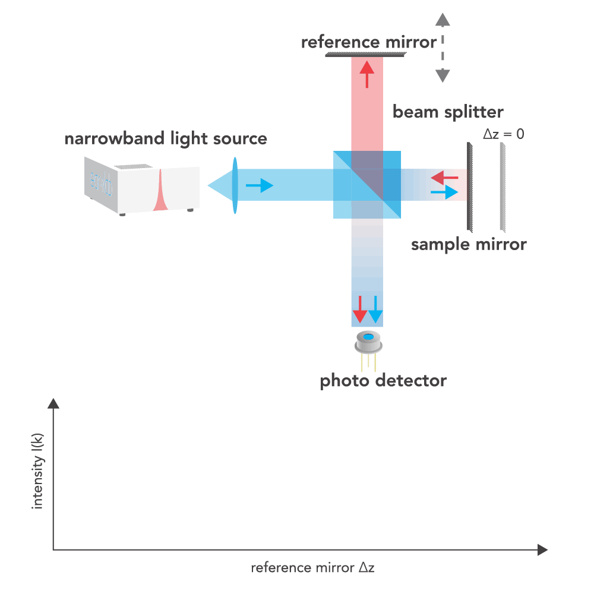
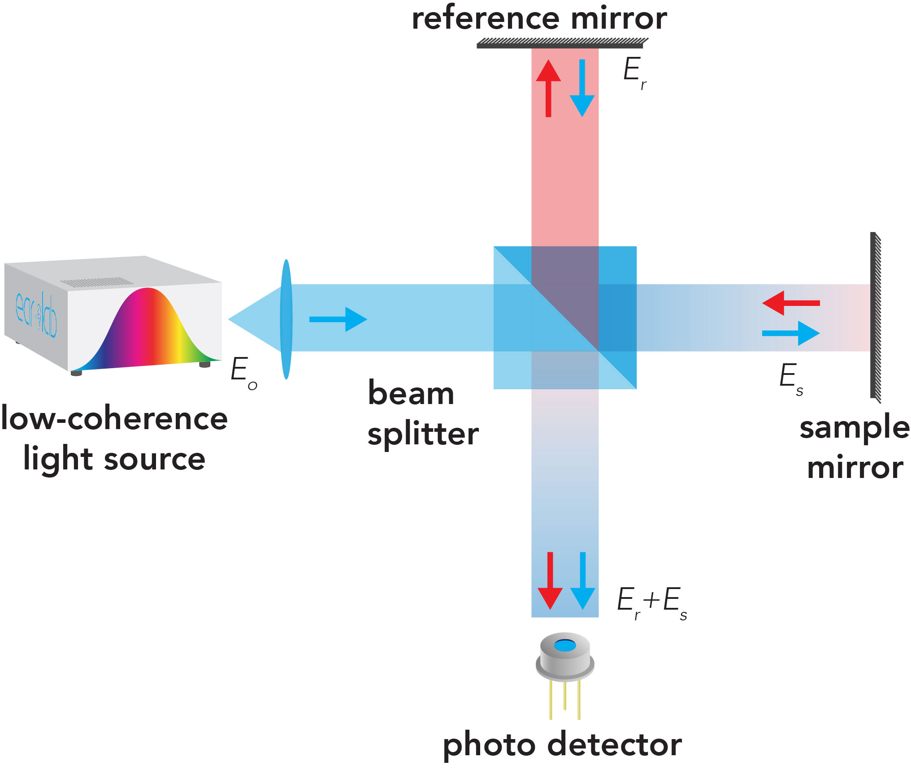

As indicated by its acronym, optical coherence tomography (OCT) is a technology that incorporates several key
principles:
Optical: It employs light waves for imaging.
Coherence: The technique utilizes the principle of low-coherence interferometry.
Tomography: OCT provides cross-sectional information about the sample being imaged.
In a classic
Michelson interferometer
setup shown here, when a narrowband light source emits a coherent beam that is split into two paths by a beam
splitter. One beam is reflected off a fixed reference mirror, while the other reflects off a movable sample
mirror. The difference in the optical path lengths of the two beams, denoted as Δz, changes as a result of
translational movement of the sample mirror. The beams are recombined at the beam splitter, which results an
interference pattern that is then detected by a photodetector. This interference pattern is essentially the
superposition of light reflected from both the reference mirror and the sample mirror. When the peaks of the two
light waves align, constructive interference occurs, leading to an increase in intensity. Conversely, when there
is a mismatch such that the peaks of one wave align with the troughs of another, destructive interference
occurs, resulting in a reduction or cancellation of intensity.

Interferometry extracts information from the interference of superimposed waves from two arms.
Elaborating on the principle of low-coherence interferometry, OCT uses utilises low-coherence or partially
coherent light to localise structures by correlating interfering light that is back-scattered from the sample arm,
\(E_s\), with the light reflected from the reference arm, \(E_r\).

In OCT, a photodetector measures the intensity of the interfered light \(I_o\), which is proportional to the total
electrical field as described by its relationship \( I = |E|^2 \).
The term \( E_r E_r^* \), often referred to as the "DC" term, is the time average of the square of the electric
fields or irradiance of the light from the reference arm and represents the dominant component in the detector
current. The expression \( E_r E_r^* \) is independent of sample reflectivity and optical pathlength difference \(
\Delta l \). The autocorrelation term \( E_s E_s^* \), describes the interference caused by multiple reflectors
present within the sample. In conventional OCT, this interference is a source of unwanted artifacts, but it can be
minimized by ensuring that the reference intensity is much higher than the sample intensity. The terms of
interest, the cross-correlation term \( E_s E_r^* e^{-i2k(\Delta l)} + E_r E_s^* e^{-i2k(\Delta l)} \), depend on
the intensity in the sample and reference arms, the path length difference between the sample and reference arms,
and the sample reflectivity. To ensure that this desired term is larger than the undesired autocorrelation term \(
E_s E_s^* \), the system is designed such that \( |E_r| \gg |E_s| \). Some authors describe the relative increase
in the cross-correlation term as compared to the autocorrelation term in terms of a “gain” applied to the sample
signal by the reference arm signal.